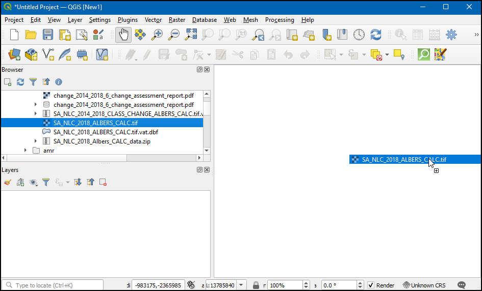
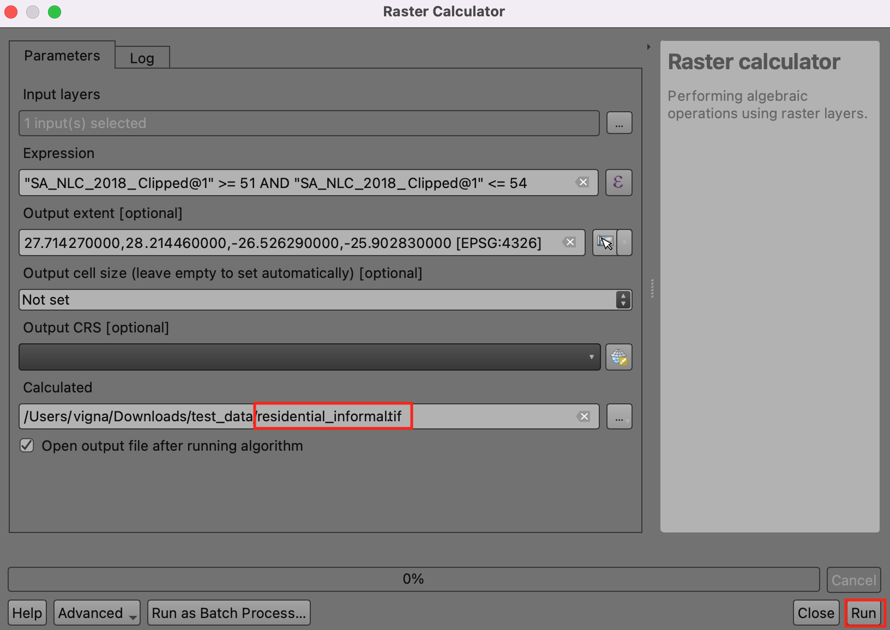
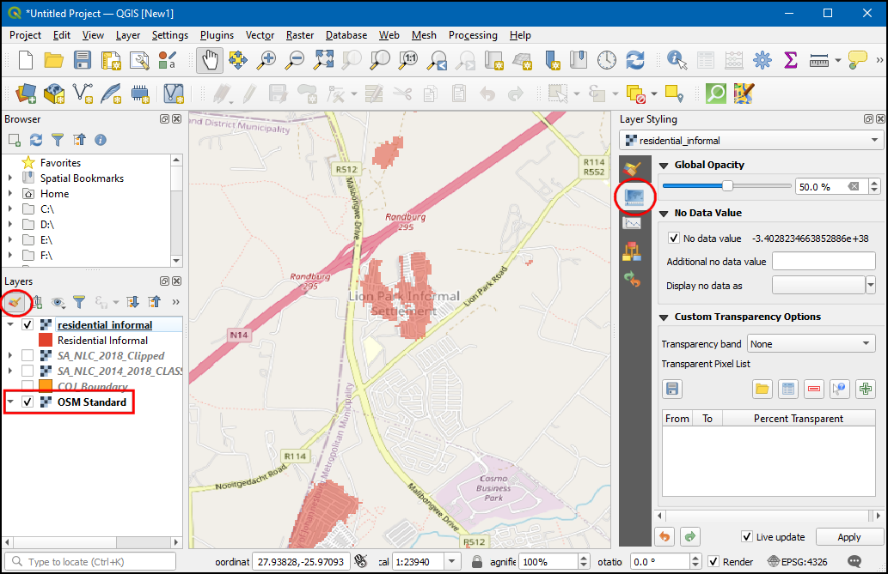
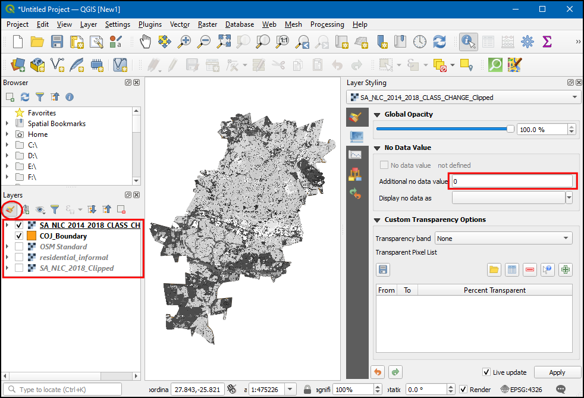

Advanced Raster Analysis (QGIS3)¶
In the previous tutorial Basic Raster Styling and Analysis (QGIS3), you learnt about performing raster algebra with Raster Calculator. This tutorial builds on these techniques and shows you how to use other raster analysis tools from the Processing Toolbox. You will learn how to process with Land Use Land Cover (LULC) rasters in QGIS to extract certain types of landcover classes and map changes.
Overview of the task¶
We will use the South African National Land Cover dataset to identify and extract informal settlements in the City of Johannesburg, South Africa. We will also use a change assessment dataset to identify urban growth patterns in the city from 2014 to 2018.
Other skills you will learn¶
How to reproject raster data to another projection.
How to load an excel file in QGIS.
How to adjust the transperancy of a raster layer in QGIS.
Get the data¶
We will download the following datasets for this tutorial
The South African National Land Cover 2018 dataset: The new South African National Land-Cover 2018 dataset has been generated from 20 meter multi-seasonal Sentinel 2 satellite imagery and contains 73 landcover classes.
The South African National Land Cover 2018 Change Assessments: This dataset compares the change in 20 landcover classes from 2014 to 2018.
COJ Boundary: A boundary shapefile for the City of Johannesburg, South Africa.
The Environmental Geographical Information Systems (E-GIS) provides access to environmental geospatial data for South Africa. We will download the South African National Land-Cover (SANLC) rasters from this portal.
Visit the GIS Data Download page. Click I agree to accept the Conditions of Use and proceed.

You will need to create a free account to download the dataset. Click I want to create an account and follow the instructions to create an account.

Once logged in, search for South African National Land Cover (SANLC) 2018 Computer Automated Land Cover (CALC). This dataset is provided in 2 different projections. For this tutorial, we will downnload the ALBERS dataset. Click to it to download the SA_NLC_2018_Albers_CALC_data.zip file.

Next, search for New South African National Land Cover (SANLC) 2014 and 2018 Change Assessment Datasets Computer Automated Land Cover (CALC) and click on the SA_NLC_2014_2018_CLASS_CHANGE_CALC (DATASET AND REPORT) to download the SA_NLC_2014_2018_CLASS_CHANGE_ALBERS_CALC.tif.vat.zip file.

The City of Johannesburg publishes spatial datasets as part of the Spatial Development Framework 2040 (SDF) for Johannesburg data. We will download the boundary shapefile from this site.
Click the download link http://bit.ly/joburg-sdf-16.

Click on the
SDF Shapefilesdirectory.

Download the
SDF Shapefiles.zipfile, and unzip it to a folder.

For your convenience, a clipped version of the required layers is available from the link below:
Procedure¶
Browse to the downloaded and unzipped folder in the browser. Expand it and drag and drop the
SA_NLC_2018_ALBERS_CALC.tifin canvas.

Once the layer is loaded, you can notice the CRS will be set as Unknown CRS on the bottom right. Double-click on it to open the Project Properties - CRS dialog box.

At the bottom, you will see a preview of the projection extent. This Unknown CRS is a custom Lambert Equal-Area Projection defined for the country of South Africa. We will later reproject this layer to another projection. Click OK.

Load other two layers
SA_NLC_2014_2018_CLASS_CHANGE_ALBERS_CALC.tifandCOJ_Boundary. You will see that the raster layer cover the entire country. For our analysis, we are only interested in the area covered by theCOJ_Boundarylayer. We will now clip the raster layer to this region. Go to tool. Double-click to open it.

In the Clip Raster by Mask Layer, select
SA_NLC_2018_ALBERS_CALCas the Input layer, thenCOJ_Boundaryas Mask layer. We also have an option to reproject the data to another projection. It is a good practice to keep all your data layers in the same projection. We will reproject the rasters to match the CRS to that of theCOJ_Boundarylayer. SelectEPSG:4326 - WGS 84as the Target CRS.

The default output data format is GeoTiff. GeoTiff files can get very large if they are not compressed. A good practice is to always apply a loss-less compression when creating new raster layers. Expand Advanced Parameters and choose
High Compressionas the Profile. Next, click the...button next to Clipped (mask) and select Save to file… to enter layer name asSA_NLC_2018_Clipped. Click Run.

Once the algorithm finishes, do not close the window. We will apply the same operation to the other raster layer. Switch to the Parameters tab and change the Input layer to
SA_NLC_2014_2018_CLASS_CHANGE_ALBERS_CALC. Keep all other options but change the output layer name toSA_NLC_2014_2018_CLASS_CHANGE_Clipped. Click Run.

Both clipped layers will now be loaded in canvas. Select the original layer and click Remove Layer to remove them.

All the three remaining layers are now in the same CRS. We can switch the project CRS to the CRS of the layers now. Right click on any clipped layer and choose .

Now the project CRS will be set to
EPSG:4326. Bring the SA_NLC_2018_Clipped layer to top.

Click on SA_NLC_2018_Clipped and use the identify tool in the Attributes Toolbar to click on the image and inspect the pixel values. You will see that the pixel values range from 1 to 73. These values represent a distinct land use/land cover class.

The dataset classes are described in the
SANLC 2018 Presentation, which can be downloaded from the EGIS Portal. For this exercise, we are interested in the informal settlements represented by class numbers 51 through 54.

Let’s extract pixels belonging to these classes. Go to tool. Double-click to open it.

Click the
...button next to Input layers. Select theSA_NLC_2018_Clippedlayer and click OK. Next, click on theεbutton to open the expression window.

Enter the following expression to select pixels from class 51-54. The source image has only 1 band. The
@1suffix indicates the band number. Click OK to close the expression window.
"SA_NLC_2018_Clipped@1" >= 51 AND "SA_NLC_2018_Clipped@1" <= 54
Next, click the
...button next to Calculated and select Save to File….

Name the output file
residential_informal.tifand click Run.

Once the process finishes, a new layer,
residential_informalwill be added to QGIS. This raster layer has only two-pixel values -1where our expression evaluated true and0where it was false. The pixels that appear white are the ones belonging to the informal settlement classes. We will style this layer better so we can see the informal settlements clearly. Click the Open the layer styling panel button.

Select the
residential_informallayer and change the renderer to be Paletted/Unique values. Click the Add values manually (+) button.

Change the Value to
1and enterResidential Informalas Label. Select a color of your choice.

We can now see all the informal settlements in the city of Johannesburg. It would be helpful to see them in context with a base map. We have access to a variety of base maps from the QuickMapServices plugin. Once you install the plugin, go to to add the OpenStreetMap layer.

Now you can easily identify and verify whether our analysis correctly identified the informal settlements. You can select the
residential_informallayer and switch to the Transparency tab in the Layer styling panel. You can reduce the Global Opacity to see both the extracted pixels and the base-map together.

You have now completed the first part of the tutorial. Now we will use the
SA_NLC_2014_2018_CHANGE_Clippedraster layer to identify regions that were urbanized between 2014 and 2018. Turn off all layers exceptSA_NLC_2014_2018_CHANGE_Clipped, then click the Open the layer styling panel button. Switch to the Transparency tab and enter0in Additional no data value. This will set the pixels with value 0 to transparent.

Use the Identify tool in the Attributes Toolbar to click on the image and inspect the pixel values. You will see that the pixel values range from 21-420. Each value indicates a transition from one of the 73 source classes to another class.

Your data download comes with a spreadsheet named
lcccodes.xlsx. This sheet has a sheet 03 urban_change_codes that gives more details about each pixel value. We are interested in all pixel values where any 2014 class changed into a 2018 built-up class. In the image below, these are highlighted in blue.

Our goal is to map changes in the built-up class. We will apply a transformation on the
SA_NLC_2014_2018_CHANGE_Clippedlayer so all the pixel values are mapped from their original values to either of the following values.
|
All pixels which were a built-up class in both 2014 and 2018 |
|
All pixels which changed from a non built-up class in 2014 to a built-up class in 2018. |
|
All remaining pixels |
To do this, we need to create a table specifying these rules. As QGIS is able to read spreadsheets directly, it is the most convenient method to create this table. Our spreadsheet should have 3 columns,
MIN,MAX, andOUTPUT. Each row should be the range of input raster values that should be assigned an output value. Create a spreadsheet as shown below and save it to your computer asreclass.xlsx. You may also download a ready-to-use copy from this link - reclass.xlsx

Locate the
reclass.xlsxfile in the browser. Drag-and-drop it to the main window.

A new layer
Sheet1will be added to the Layers panel. Right-click on it and select Open Attribute Table. Verify that the sheet was imported correctly and you have 3 columns namedMIN,MAXandOUTPUT. Open the tool.

In the Reclassify by layer dialog, select
SA_NLC_2014_2018_CHANGE_Clippedas the Raster layer. SelectSheet1as the Layer containing class breaks. SelectMIN,MAXandOUTPUTfields for their respective fields.

Expand the Advanced Parameters section. Change the Range boundaries to
min <= value <= max. Click the … button for Reclassified raster and enter the output file name asbuiltup_change.tif. Click Run.

Once the processing finishes, a new layer
builtup_changewith pixel values0-2will be added to the canvas. In the Layer styling panel, choosePaletted/Unique values, then clickClassify.

Choose the color of your choice for each category and label the
0,1, and2pixel values asNon Built-up,Existing Built-upandNew Built-up.

Now in the Transparency tab, reduce the Global Opacity, and turn on the
OSM Standardlayer to see both the builtup_change pixels and the base-map together.

If you want to give feedback or share your experience with this tutorial, please comment below. (requires GitHub account)